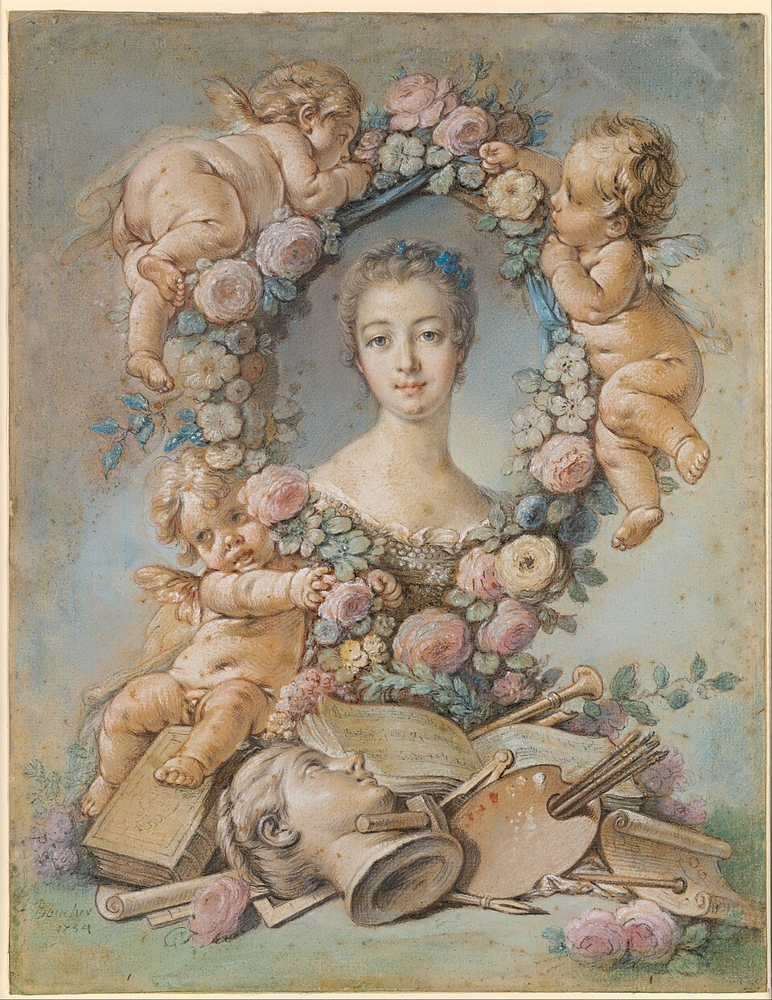

In the course, we gave a very high-level sketch explaining why the existence of something called a “Pseudorandom Generator” would lead to the derandomization result P = BPP. The sketch left out many lower-level details and even omitted explaining how such a proof would be formalized in the first place. What does it mean for bits to “look random” to a poly-time TM? to all poly-time TMs?
In this section, we introduce foundational ideas in cryptography to formalize this “computational indistinguishability” as well as proof techniques that will allow us to reason about them. We then attempt to prove the result from lecture—no matter whether we actually manage to show P = BPP or some different result, we'll have all the foundations needed for the next section.
One-way functions have been a recurring background character throughout the entire course, but they've mostly been introduced as black-box tools that make random proofs from across the field possible. In this section, we (finally) formally define one-way functions and use the cryptographic tools from the first section to (finally) meaningfully connect them directly to derandomization results.
The major theorem of this section (and of the site in general) is the HILL Theorem (Håstad, Impagliazzo, Levin, and Luby, 1999), which states that one-way functions exist if and only if pseudorandom generators exist. We'll introduce smaller theorems along the way that help put this result into context. As for the proof of the theorem itself, we prove the backward direction (PRG ⟹ OWF) in full, while we restrict the forward direction to a specific type of one-way functions; the reason why will become clear.